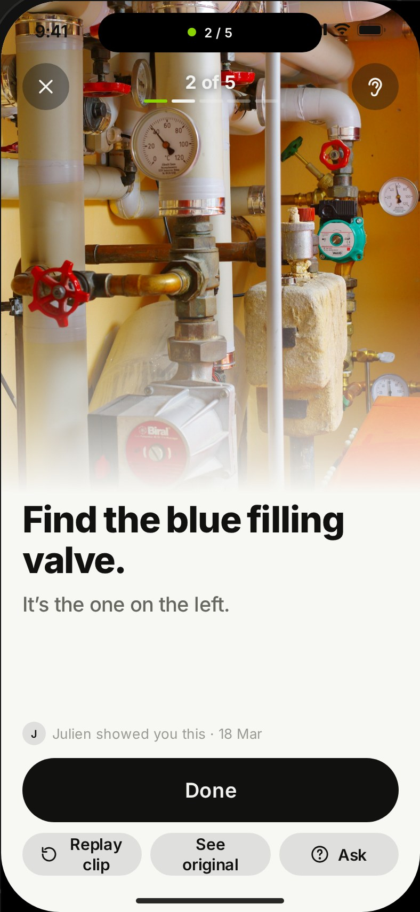
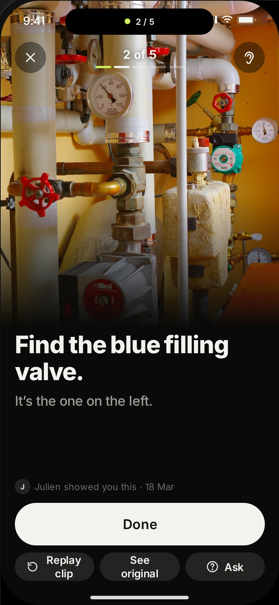
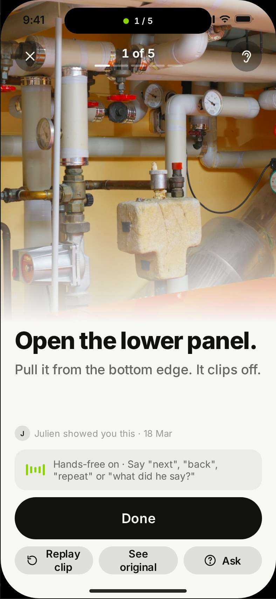
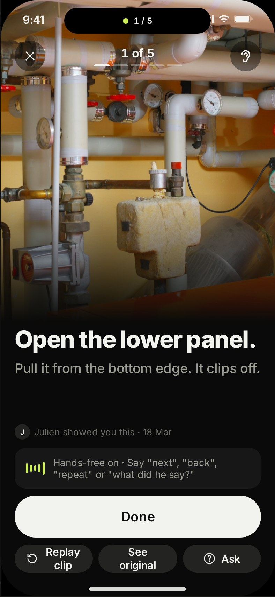

<!doctype html><meta charset="utf-8"><title>DoOnce review</title><style>body{margin:0;background:#1B1C1A;color:#ddd;font:13px Inter,system-ui;padding:24px}main{display:grid;grid-template-columns:repeat(auto-fill,minmax(200px,1fr));gap:18px}figure{margin:0}img{width:100%;border-radius:12px}figcaption{margin-top:6px;opacity:.7}</style><main><figure><figcaption>do · light</figcaption></figure><figure><figcaption>do · dark</figcaption></figure><figure><figcaption>do-handsfree · light</figcaption></figure><figure><figcaption>do-handsfree · dark</figcaption></figure></main>